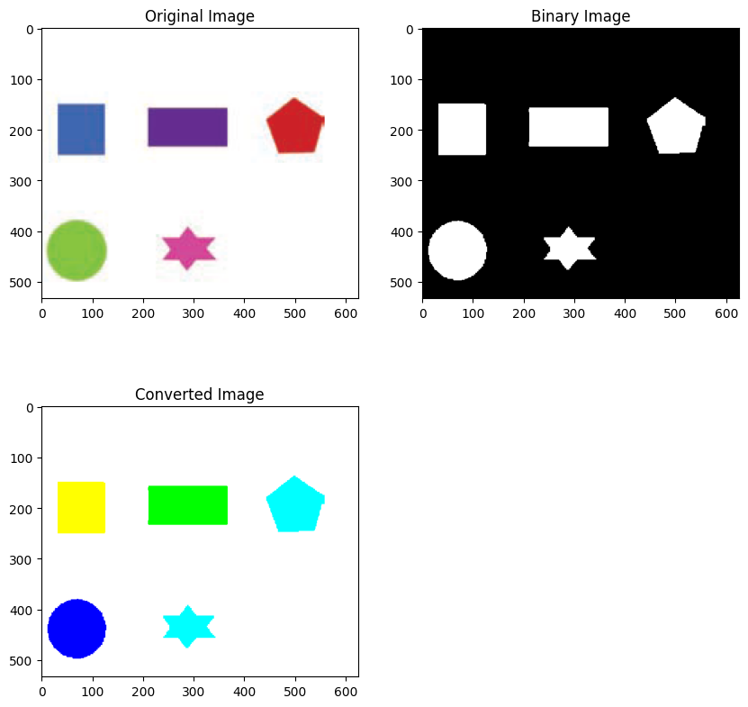
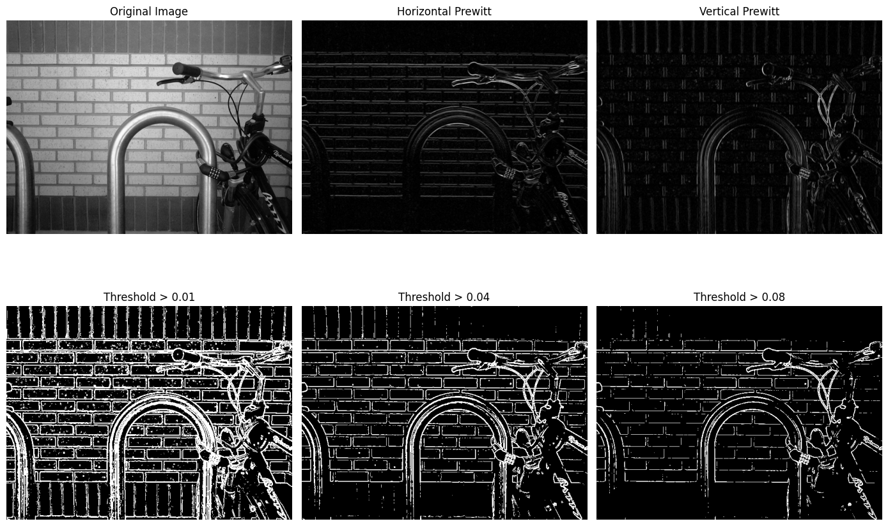
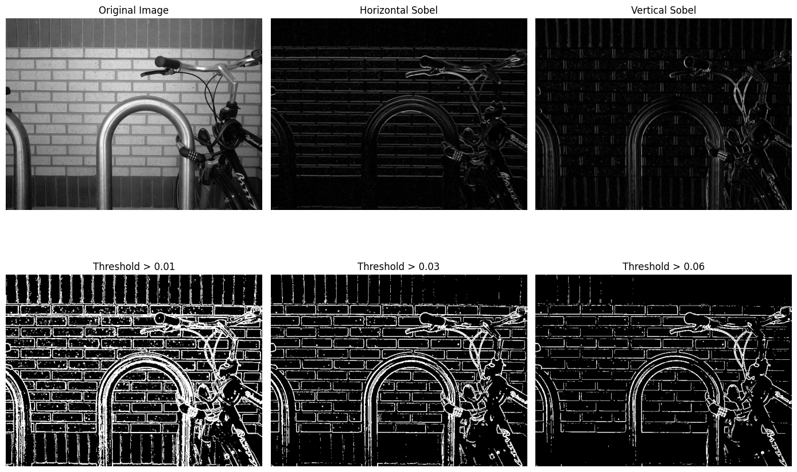
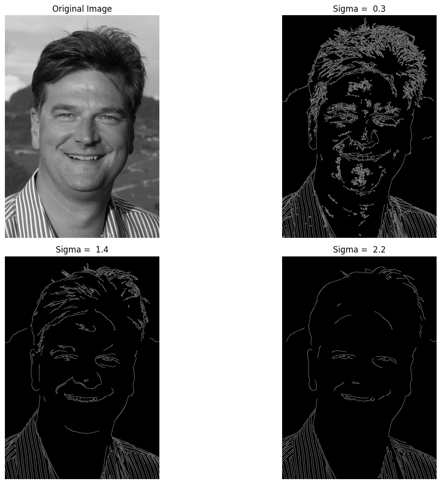
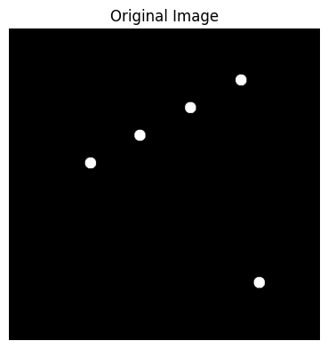
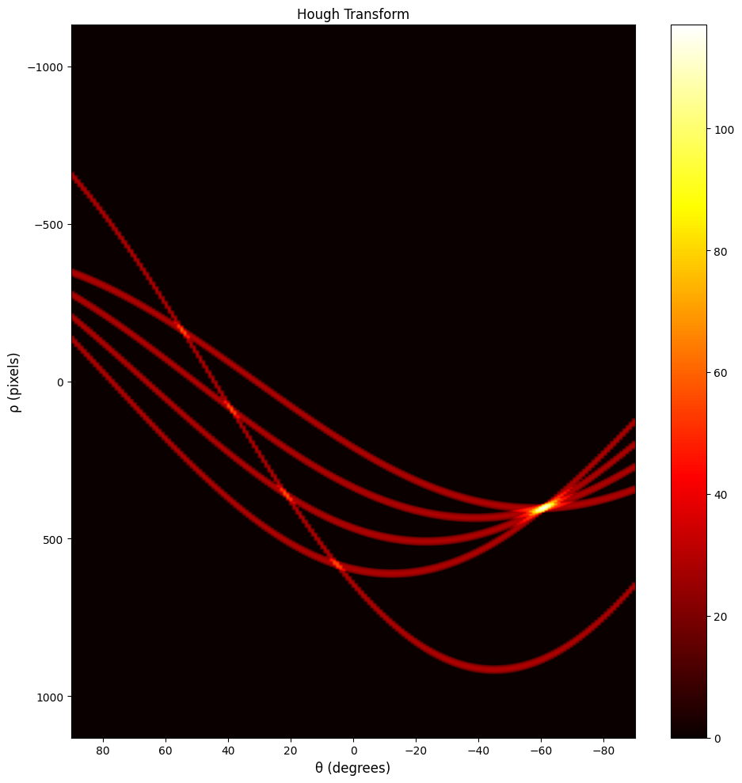
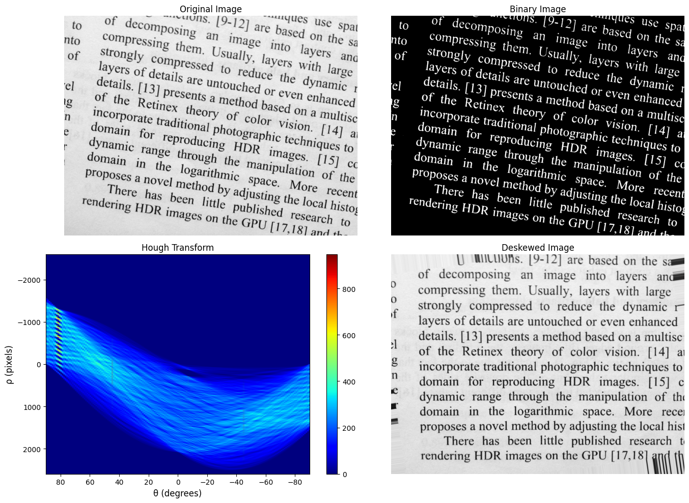
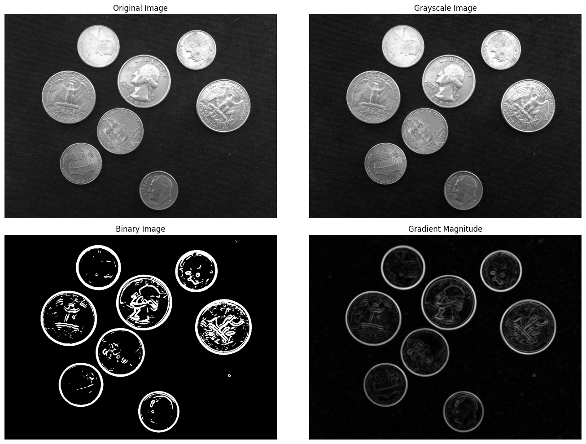
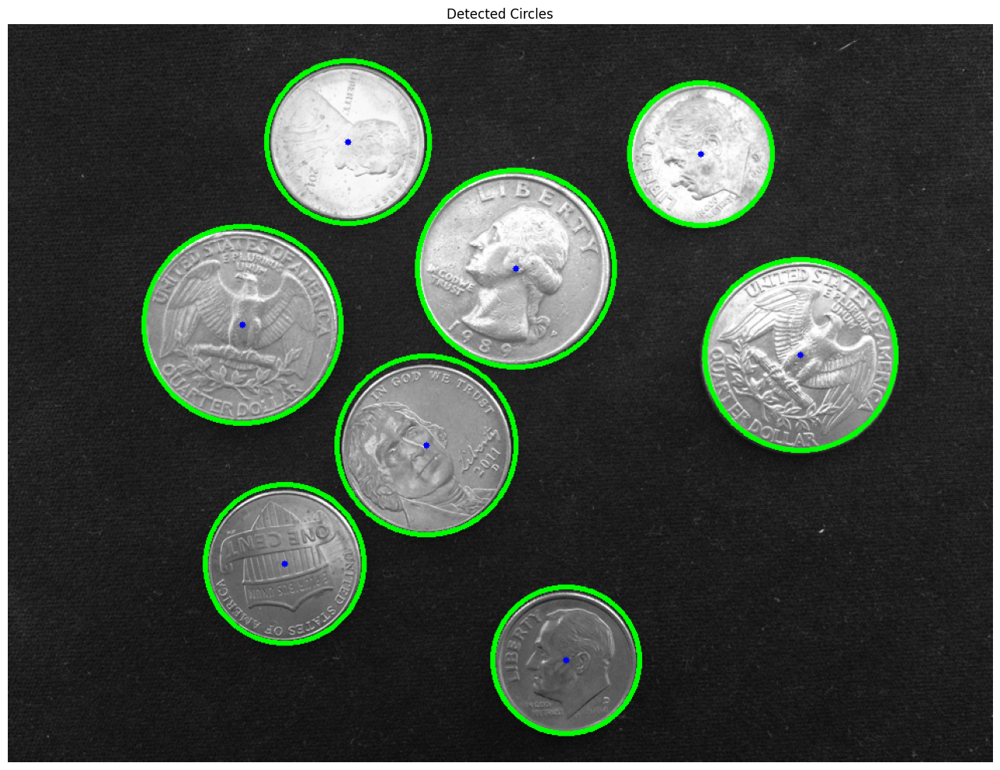

# load packages
import cv2
import numpy as np
import matplotlib.pyplot as plt
from skimage.measure import label
from skimage.color import label2rgb
from skimage.filters import threshold_otsuSession 8: Edge Detection
- Ex8_1: Change object’s color by Region Setting
- Ex8_2: Edge Detection with Prewitt Operators
- Ex8_3: Edge Detection with Sobel Operators
- Ex8_4: Canny Edge Detector
- Ex8_5: Hough Transform
- Ex8_6: Hough Transform Application - Text Rotation
- Ex8_7: Hough Transform Application - Coin Edge Detection
# Create a link to Session folder
PATH = '/content/drive/MyDrive/IVP/Session_08/'
# Font size for figures
FS = 12#Ex8_1: Change object's color by Region Setting
Img = cv2.imread(PATH + 'shapes.png')
Img_gray = cv2.cvtColor(Img, cv2.COLOR_BGR2GRAY)
level = threshold_otsu(Img_gray)
Img_bw = (Img_gray < level).astype(np.uint8) * 255
# thres_val, Img_bw = cv2.threshold(Img_gray, 0, 255, cv2.THRESH_BINARY + cv2.THRESH_OTSU)
# Assign labels to objects
L = label(Img_bw, connectivity=2)
cmap = np.array([
[0, 255, 255], #pentagon = aqua
[255, 255, 0], #square = yellow
[0, 255, 0], #rectangle = lime
[0, 0, 128], #circle = navy
[0, 128, 128] #asterisk = teal
])
# Convert labels (objects) to the new color map
Img_converted = label2rgb(L, colors=cmap, bg_label=0,bg_color=(1,1,1), kind='overlay')
# Display Results
plt.figure(figsize=(10,10))
plt.subplot(2,2,1), plt.imshow(cv2.cvtColor(Img, cv2.COLOR_BGR2RGB)), plt.title('Original Image', fontsize=FS)
plt.subplot(2,2,2), plt.imshow(Img_bw, cmap='gray'), plt.title('Binary Image', fontsize=FS)
plt.subplot(2,2,3), plt.imshow(Img_converted), plt.title('Converted Image', fontsize=FS)
plt.show()WARNING:matplotlib.image:Clipping input data to the valid range for imshow with RGB data ([0..1] for floats or [0..255] for integers). Got range [0.0..255.0].
#Ex8_2: Edge Detection with Prewitt Operators
Img = cv2.imread(PATH + 'bike.png', cv2.IMREAD_GRAYSCALE)
# Convert from integer to double format
Img = Img.astype(np.float64)
# Create Prewith operators
ph = np.array([[-1,-1,-1], # detects horizontal edges
[0,0,0],
[1,1,1]])
pv = np.array([[-1,0,1], # detects vertical edges
[-1,0,1],
[-1,0,1]])
# Apply Prewitt in horizontal direction
filtered_Img1 = cv2.filter2D(Img, -1, ph, borderType=cv2.BORDER_REPLICATE)
filtered_Img1 = np.abs(filtered_Img1)
filtered_Img1 = filtered_Img1 / np.max(filtered_Img1)
# Apply Prewitt in vertical direction
filtered_Img2 = cv2.filter2D(Img, -1, pv, borderType=cv2.BORDER_REPLICATE)
filtered_Img2 = np.abs(filtered_Img2)
filtered_Img2 = filtered_Img2 / np.max(filtered_Img2) #normalize the filtered_Img2
# Combine two operators in both directions
# G2^2 = Gx^2 + Gy^2
filtered_Img3 = filtered_Img1 ** 2 + filtered_Img2 ** 2
log_filtered_Img3 = np.log(filtered_Img3 + 1)
log_filtered_Img3 = log_filtered_Img3 / np.max(log_filtered_Img3) #normalize the filtered_Img3
# Get three different thresholds
bw_edge1 = log_filtered_Img3 > 0.01
bw_edge2 = log_filtered_Img3 > 0.04
bw_edge3 = log_filtered_Img3 > 0.08
# Display results
plt.figure(figsize=(14,10))
plt.subplot(2, 3, 1), plt.imshow(Img.astype(np.uint8), cmap='gray'), plt.title('Original Image', fontsize=FS), plt.axis('off')
plt.subplot(2, 3, 2), plt.imshow(filtered_Img1, cmap='gray'), plt.title('Horizontal Prewitt', fontsize=FS), plt.axis('off')
plt.subplot(2, 3, 3), plt.imshow(filtered_Img2, cmap='gray'), plt.title('Vertical Prewitt', fontsize=FS), plt.axis('off')
plt.subplot(2, 3, 4), plt.imshow(bw_edge1, cmap='gray'), plt.title('Threshold > 0.01', fontsize=FS), plt.axis('off')
plt.subplot(2, 3, 5), plt.imshow(bw_edge2, cmap='gray'), plt.title('Threshold > 0.04', fontsize=FS), plt.axis('off')
plt.subplot(2, 3, 6), plt.imshow(bw_edge3, cmap='gray'), plt.title('Threshold > 0.08', fontsize=FS), plt.axis('off')
plt.tight_layout()
plt.savefig(PATH + 'Ex8_2.jpg', dpi=400)
plt.show()
#Ex8_3: Edge Detection with Sobel Operators
# Create Sobel operators
ph = np.array([[-1, -2, -1],
[ 0, 0, 0],
[ 1, 2, 1]], dtype=np.float64)
pv = np.array([[-1, 0, 1],
[-2, 0, 2],
[-1, 0, 1]], dtype=np.float64)
# Apply Sobel in horizontal direction
filtered_Img1 = cv2.filter2D(Img, -1, ph, borderType=cv2.BORDER_REPLICATE)
filtered_Img1 = np.abs(filtered_Img1)
filtered_Img1 = filtered_Img1 / np.max(filtered_Img1) #normalize the filtered_Img1
# Apply Sobel in vertical direction
filtered_Img2 = cv2.filter2D(Img, -1, pv, borderType=cv2.BORDER_REPLICATE)
filtered_Img2 = np.abs(filtered_Img2)
filtered_Img2 = filtered_Img2 / np.max(filtered_Img2) #normalize the filtered_Img2
# Combine two operators in both directions
filtered_Img3 = filtered_Img1 ** 2 + filtered_Img2 ** 2
log_filtered_Img3 = np.log(filtered_Img3 + 1)
log_filtered_Img3 = log_filtered_Img3 / np.max(log_filtered_Img3) #normalize the filtered_Img3
# Get three different thresholds
bw_edge1 = log_filtered_Img3 > 0.01
bw_edge2 = log_filtered_Img3 > 0.03
bw_edge3 = log_filtered_Img3 > 0.06
# Display results
plt.figure(figsize=(14,10))
plt.subplot(2, 3, 1), plt.imshow(Img.astype(np.uint8), cmap='gray'), plt.title('Original Image', fontsize=FS), plt.axis('off')
plt.subplot(2, 3, 2), plt.imshow(filtered_Img1, cmap='gray'), plt.title('Horizontal Sobel', fontsize=FS), plt.axis('off')
plt.subplot(2, 3, 3), plt.imshow(filtered_Img2, cmap='gray'), plt.title('Vertical Sobel', fontsize=FS), plt.axis('off')
plt.subplot(2, 3, 4), plt.imshow(bw_edge1, cmap='gray'), plt.title('Threshold > 0.01', fontsize=FS), plt.axis('off')
plt.subplot(2, 3, 5), plt.imshow(bw_edge2, cmap='gray'), plt.title('Threshold > 0.03', fontsize=FS), plt.axis('off')
plt.subplot(2, 3, 6), plt.imshow(bw_edge3, cmap='gray'), plt.title('Threshold > 0.06', fontsize=FS), plt.axis('off')
plt.tight_layout()
plt.savefig(PATH + 'Ex8_3.jpg', dpi=400)
plt.show()
#Ex8_4: Canny Edge Detector
Img = cv2.imread(PATH + 'man_face.png', cv2.IMREAD_GRAYSCALE)
# Convert from integer to double format
Img = Img.astype(np.float64)
# Create a matrix of different sigmaValues
sigmaValues = [0.3, 1.4, 2.2]
thresholdValue = 0.5
# Calculate edge detection with different sigma values and display results
plt.figure(figsize=(14,10))
plt.subplot(2, 2, 1), plt.imshow(Img.astype(np.uint8), cmap='gray'), plt.title('Original Image', fontsize=FS), plt.axis('off')
# Scan all sigma values
for i, sigma in enumerate(sigmaValues):
# Calculate the kernel size (must be an odd value)
kernel = int(5 * sigma + 1)
kernel = kernel + 1 if kernel % 2 == 0 else kernel
# Smooth the input image with Gaussian LPF
smoothed_Img = cv2.GaussianBlur(Img, (kernel, kernel), sigma)
# Define two threshold values (T_low, T_high)
T_low = int(0.15 * thresholdValue * 255)
T_high = int(0.8 * thresholdValue * 255)
# Apply Canny edge detector
edges = cv2.Canny(smoothed_Img.astype(np.uint8), T_low, T_high)
# Display result
plt.subplot(2, 2, i+2), plt.imshow(edges, cmap='gray')
plt.title(f'Sigma = {sigma: .1f}', fontsize=FS), plt.axis('off')
plt.tight_layout()
plt.savefig(PATH + 'Ex8_4.jpg', dpi=400)
plt.show()
#Ex8_5: Hough Transform
from skimage.transform import hough_line, hough_line_peaks
from skimage.feature import canny
# Load image
Img = cv2.imread(PATH + 'dots.png', cv2.IMREAD_GRAYSCALE)
# Convert from integer to double format
Img = Img.astype(np.float64)
plt.figure(figsize=(10,10))
plt.subplot(2,2,1), plt.imshow(Img, cmap='gray'), plt.title('Original Image', fontsize=FS)
plt.axis('off')
plt.show()
# Calculate and display Hough transform
angles = np.linspace(-np.pi/2, np.pi/2, 181, endpoint=True) #draw a line every single degree
h, theta, d = hough_line(Img, theta=angles)
plt.figure(figsize=(10,10))
plt.imshow(h, extent=(np.rad2deg(theta[-1]), np.rad2deg(theta[0]), d[-1], d[0]), cmap='hot', aspect='auto')
plt.title('Hough Transform', fontsize=FS)
plt.xlabel('θ (degrees)', fontsize=FS)
plt.ylabel('ρ (pixels)', fontsize=FS)
plt.colorbar()
plt.tight_layout()
plt.show()

#Ex8_6: Hough transform application - Text Rotation
from skimage.transform import hough_line, hough_line_peaks, rotate
from skimage.feature import canny
Img = cv2.imread(PATH + 'paper.jpg', cv2.IMREAD_GRAYSCALE)
# Convert image from GRAYSCALE to BINARY using Otsu method
thres_val, Img_bw = cv2.threshold(Img, 0, 255, cv2.THRESH_BINARY_INV + cv2.THRESH_OTSU)
# Display results
plt.figure(figsize=(14,10))
plt.subplot(2,2,1), plt.imshow(Img, cmap='gray'), plt.title('Original Image', fontsize=FS)
plt.axis('off')
plt.subplot(2,2,2), plt.imshow(Img_bw, cmap='gray'), plt.title('Binary Image', fontsize=FS)
plt.axis('off')
# Calculate Hough Transform
angles = np.linspace(-np.pi/2, np.pi/2, 181, endpoint=True) #draw a line every single degree
h, theta, rho = hough_line(Img_bw, theta=angles)
#find biggest peak lines
peakNum = 20
accums, peak_angles, peak_rhos = hough_line_peaks(h, theta, rho, num_peaks=peakNum, threshold=0.2*np.max(h))
#display Hough transform
plt.subplot(2,2,3), plt.imshow(h, extent=(np.rad2deg(theta[-1]), np.rad2deg(theta[0]), rho[-1], rho[0]), cmap='jet', aspect='auto')
plt.title('Hough Transform', fontsize=FS)
plt.xlabel('θ (degrees)', fontsize=FS)
plt.ylabel('ρ (pixels)', fontsize=FS)
plt.colorbar()
plt.tight_layout()
# Rotate the original image with the median of peak lines
rotate_angle = np.median(np.rad2deg(peak_angles))
deskewed_Img = rotate(Img, (90 + rotate_angle), resize=False, mode='edge')
plt.subplot(2,2,4), plt.imshow(deskewed_Img, cmap='gray'), plt.title('Deskewed Image', fontsize=FS)
plt.axis('off')
plt.show()
#Ex8_7: Hough Transform Application - Coin Edge Detection
# Load image
Img = cv2.imread(PATH + 'coins.png', cv2.IMREAD_COLOR_RGB)
# Convert from RGB to GRAYSCALE
Img_gray = cv2.cvtColor(Img, cv2.COLOR_RGB2GRAY)
# Smooth the image to reduce noise
smoothed_Img = cv2.GaussianBlur(Img_gray, (9,9), 3)
# Option 1: Using Prewitt operators
# Convert from integer to double format
smoothed_Img = smoothed_Img.astype(np.float64)
# Apply Prewitt filters to the image
Gx = cv2.filter2D(smoothed_Img, -1, ph, borderType=cv2.BORDER_REPLICATE)
Gy = cv2.filter2D(smoothed_Img, -1, pv, borderType=cv2.BORDER_REPLICATE)
# Calculate the gradient magnitude from Gx and Gy
mag = cv2.magnitude(Gx, Gy)
# Normalize the magnitude
mag_norm = cv2.normalize(mag, None, 0, 255, cv2.NORM_MINMAX, cv2.CV_8U).astype(np.uint8)
# Apply thresholding to detect edges
T = 0.15 * mag.max()
Img_bw = (mag >= T).astype(np.uint8) * 255
# Display results
plt.figure(figsize=(14,10))
plt.subplot(2, 2, 1), plt.imshow(Img), plt.title('Original Image', fontsize=FS), plt.axis('off')
plt.subplot(2, 2, 2), plt.imshow(Img_gray, cmap='gray'), plt.title('Grayscale Image', fontsize=FS), plt.axis('off')
plt.subplot(2, 2, 3), plt.imshow(Img_bw, cmap='gray'), plt.title('Binary Image', fontsize=FS), plt.axis('off')
plt.subplot(2, 2, 4), plt.imshow(mag_norm, cmap='gray'), plt.title('Gradient Magnitude', fontsize=FS), plt.axis('off')
plt.tight_layout()
plt.savefig(PATH + 'Ex8_7a.jpg', dpi=400)
plt.show()
#Option 2: Using Hough transform
#equalize the grayscale image
Img_eq = cv2.equalizeHist(smoothed_Img.astype(np.uint8))
#define Hough circle parameters
circles = cv2.HoughCircles(
Img_eq,
method=cv2.HOUGH_GRADIENT,
dp=1.2,
minDist=130,
param1=120, #sensitivity 1
param2=50, #sensitivity 2
minRadius=70,
maxRadius=120
)
#filter to find most suitable circles
if circles is not None:
circles = np.uint16(np.around(circles[0]))
for (x, y, r) in circles:
#draw circles
cv2.circle(Img, (x, y), r, (0, 255, 0), 3)
#draw center points
cv2.circle(Img, (x, y), 3, (0, 0, 255), -1)
#display results
plt.figure(figsize=(14,10))
plt.imshow(Img), plt.title('Detected Circles', fontsize=FS), plt.axis('off')
plt.tight_layout()
plt.savefig(PATH + 'Ex8_7b.jpg', dpi=400)
plt.show()

